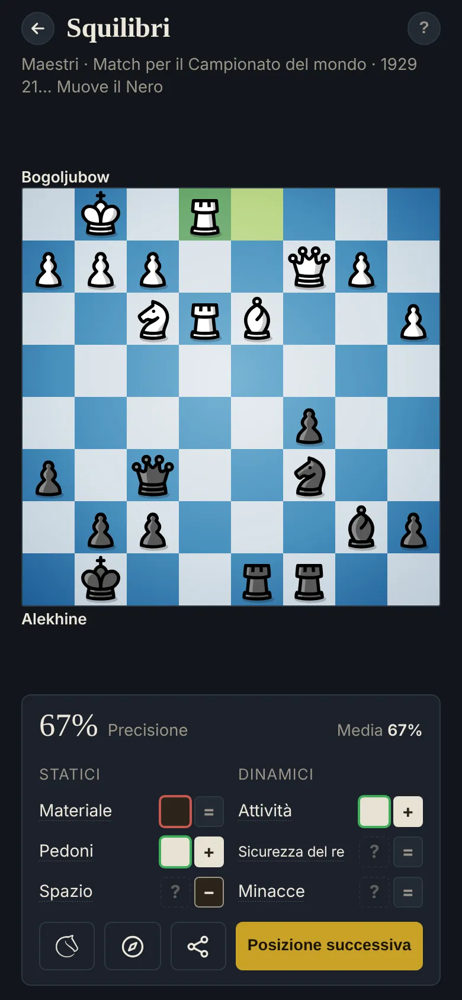

Squilibri
Impara a leggere una posizione
Ogni posizione è un insieme di differenze tra i due lati. I giocatori forti individuano le poche che decidono la partita e ci costruiscono il piano attorno: un'idea resa celebre da Jeremy Silman.

I sei squilibri
- Materiale: pedone 1, cavallo e alfiere 3, torre 5, donna 9; la coppia degli alfieri aggiunge mezzo pedone.
- Pedoni: pedoni passati e collegati, tanto più quanto sono avanzati; i pedoni isolati, doppiati e arretrati contano contro.
- Spazio: i pedoni e le case sicure dietro di loro al centro.
- Attività: le case sicure che raggiungono i tuoi pezzi, gli avamposti, le colonne aperte. All'inizio della partita, lo Sviluppo al suo posto.
- Sicurezza del re: il riparo di pedoni contro i pezzi che attaccano. Senza donne, l'Attività del re al suo posto.
- Minacce: il materiale che puoi vincere subito, e le minacce per la mossa successiva, come una spinta di pedone che attacca un pezzo.
Materiale, Pedoni e Spazio sono statici: tendono a durare. Gli altri sono dinamici: usali prima che svaniscano.
L'esercizio
Scegli 3 degli squilibri che decidono la posizione (possono essere più di 3) e chi ha il vantaggio. La correzione mostra la misura di ciascuno: = equilibrato; + o ++ un vantaggio piccolo o grande per il Bianco, − o −− per il Nero. Una scelta tra i 3 vantaggi più grandi, dal lato giusto, vale tutti i punti; un vantaggio più piccolo, metà; uno equilibrato o dal lato sbagliato, niente.
Cerca prima i ++. Un grande squilibrio può pesare più di diversi piccoli, e la tattica batte tutti.